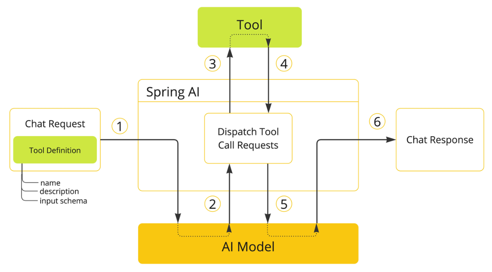

Tool Calling
在大模型应用的发展过程中，人们逐渐发现，仅依靠语言模型本身的推理能力，很难完成复杂的真实世界任务。例如查询数据库、访问搜索引擎、调用企业内部 API、执行代码、或者访问外部系统资源， 这些能力都超出了语言模型原本的能力范围。因此，Tool Calling（工具调用）机制成为构建 AI Agent 的核心能力之一，它使得大模型不仅能够“思考”和“生成文本”，还能够调用外部工具完成实际任务。

简单来说，Tool Calling 的本质就是：
让大模型在推理过程中，根据任务需要，自动选择并调用外部工具，从而扩展自身能力。在现代 AI Agent 架构中，Tool Calling 已经成为连接 LLM 与真实世界系统的关键桥梁。一个典型的 Tool Calling 流程通常如下：
flowchart TD
input[User Input] --> reasoning[LLM Reasoning]
reasoning --> needTool{需要调用工具？}
needTool -->|是| selection[Tool Selection]
selection --> execution[Tool Execution]
execution --> result[Result Returned to LLM]
result --> reasoning
needTool -->|否| response[Final Response]在这个过程中，大模型不仅负责理解用户意图，还需要判断是否需要调用工具，并决定调用哪个工具以及传递哪些参数。
Tool 定义
在 AI Agent 系统中，Tool（工具）可以理解为一种可被大模型调用的能力接口。它可以是一个函数、一个 API、一个数据库查询接口，甚至是一个复杂的业务系统。从抽象角度来看，一个 Tool 通常包含三个核心部分：
1. Tool Name
工具的唯一名称，用于让模型识别和选择工具。例如：
-
search_web -
get_weather -
query_database -
send_email
名称需要清晰表达工具功能，以帮助模型更准确地进行选择。
2. Tool Description
工具的功能描述，用于告诉大模型：
-
这个工具可以做什么
-
在什么情况下应该使用它
-
输入参数代表什么含义
例如：
Get the current weather of a city.
Use this tool when the user asks about weather.
描述越清晰，大模型在推理时选择正确工具的概率就越高。
3. Tool Parameters
工具的输入参数定义，包括参数名称、数据类型以及含义说明。例如：
city: string
unit: celsius | fahrenheit
这些参数会在模型决定调用工具时，由模型自动生成对应的参数值。
Tool Schema
为了让大模型能够正确理解工具结构，系统通常需要使用 Schema（结构定义） 来描述 Tool。目前主流的工具描述方式通常基于 JSON Schema。
一个典型的 Tool Schema 示例：
{
"name": "get_weather",
"description": "Get the current weather of a city",
"parameters": {
"type": "object",
"properties": {
"city": {
"type": "string",
"description": "The name of the city"
},
"unit": {
"type": "string",
"enum": ["celsius", "fahrenheit"]
}
},
"required": ["city"]
}
}
该 Schema 向大模型清晰地描述了以下信息：
-
工具名称：
get_weather -
工具功能：查询城市天气
-
参数结构：
-
city：城市名称 -
unit：温度单位 -
必填参数：
city
当用户提出请求，例如：
北京今天的天气怎么样？
模型在推理后可能生成如下 Tool 调用：
{
"tool": "get_weather",
"arguments": {
"city": "Beijing",
"unit": "celsius"
}
}
系统收到该调用后，执行对应工具，并将结果返回给模型。
Tool Calling 的核心优势
相比传统的纯文本生成方式，Tool Calling 为 AI Agent 带来了几个关键能力。
首先是能力扩展（Capability Extension）。通过工具调用，大模型可以访问实时数据、调用计算程序、执行复杂任务，从而突破语言模型本身的能力限制。
其次是系统集成能力（System Integration）。企业可以将内部系统（如 CRM、ERP、数据库、搜索服务等）封装为工具，使 AI Agent 成为统一的智能入口。
第三是结构化执行（Structured Execution）。由于工具使用标准 Schema 描述，因此工具调用过程是可控和可验证的，这对于生产级 AI 系统非常重要。
最后是可组合性（Composable Architecture）。多个 Tool 可以组合形成复杂工作流，使 Agent 能够逐步完成复杂任务。
Tool Calling 在 Agent 系统中的作用
在现代 AI Agent 架构中，Tool Calling 通常承担以下角色：
-
能力扩展层（Capability Layer） 为 LLM 提供额外能力，例如搜索、计算、数据库访问等。
-
系统接口层（Integration Layer） 将企业系统、API 服务和外部平台统一封装为工具。
-
任务执行层（Execution Layer） 在 Agent 推理过程中执行实际操作。
因此，一个成熟的 Agent 系统通常会维护一个 Tool Registry（工具注册表），用于管理所有可调用工具，并在推理时提供给大模型。
Tool Calling 的发展趋势
随着 AI Agent 技术的发展，Tool Calling 正在从简单的函数调用机制，逐渐演进为更完整的 Agent 工具生态。
例如：
-
Function Calling：大模型直接生成函数调用
-
Tool Use Reasoning：模型通过多步推理选择工具
-
Tool Planning：模型规划多个工具组合使用
-
MCP（Model Context Protocol）：统一工具和资源访问协议